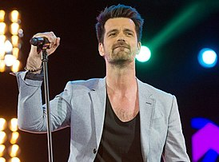
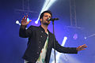
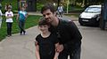
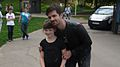

Алан Кордье (фр. Alain Cordier; 25 ноября 1979, Тьонвиль, Франция) — известный под сценическим псевдонимом Corson — французский композитор, автор песен и поп-рок певец. Особенность артиста — характерный лирический тенор и использование классической школы вокала, которую Corson совмещает в своем творчестве поп-рок исполнителя. Его дебютный 11-трековый альбом The Rainbow выпущен Polydor в январе 2015 года. Репертуар артиста преимущественно англоязычный.
 
